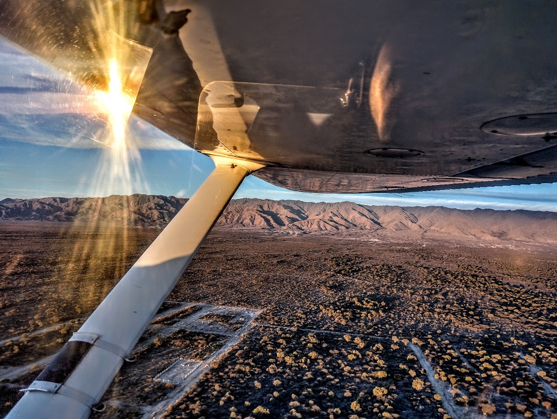

Piloto Privado de avion
El curso de PPA está pensado para quienes están dando sus primeros pasos en el maravilloso mundo de la aviación, dando lugar al aprendizaje de las nociones básicas del vuelo, siempre respondiendo a las normativas estipuladas por la autoridad aeronáutica competente (ANAC).
Requisitos